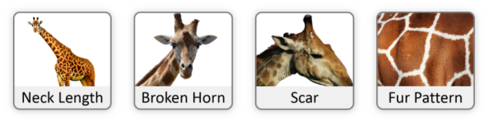
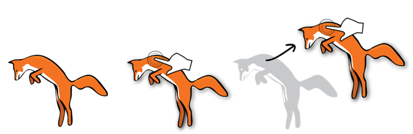

Matching
The matching response type allows test takers to categorize, sequence, or otherwise sort options by dragging them to drop targets.
Draggable Objects
Some draggable objects are contain text, while others contain images. The behavior of text and image objects is identical, and both are sized for easy use with touch.
Text
Text objects are blue #246BB2 with bold white #FFFFFF text to distinguish them from non-interactive text elements. Text objects’ dimensions vary according to the size of their content, but they have a maximum width of approximately 45 characters to keep them from becoming unwieldy.
Images
Image object styling (e.g., inclusion of a label, use of borders) varies depending on the needs of the item. However, image objects are most frequently placed in tiles with a gray #808080 border and rounded corners to help indicate that they are interactive.

States
Draggable objects have the following states.
- Unplaced. All objects have a drop shadow.
- Active. While a draggable object is being dragged, the size of its drop shadow is increased to emphasize that it is hovering above the plane of the response area. A brightness filter is applied to lighten the object slightly.
- Placed. The drop shadow and filter are removed to convey that the object has been successfully placed in a drop target.
- Disabled. When a modal system tool (e.g., Scratchwork) is enabled, draggable objects become semi-transparent and lose their drop shadows to indicate that they are inactive.
Drag behavior
If more than 50% of an object is within the bounds of a drop target when the object is released, the object will be placed in the target. If an object is not successfully placed in a drop target, it will animate back to its original position in the source tray.
Object reuse
Item authors specify whether draggable objects can be used once, a specified number of times, or as many times as the test taker wishes. When an object is dragged, a copy is left in the source tray until the specified number of uses is reached.
Source Trays
Draggable objects are initially placed in a source tray, which typically appears above or to the left of the drop targets. Source trays have rounded corners, a light gray #ECECEC background, and a darker gray #BBBBBB border to visually differentiate them from surrounding content.
Objects are placed in rows. A new row begins when there is not enough room on the current row to contain the next object. Objects are vertically aligned to the top of their row. Source trays have padding—equivalent to 0.5x the default line height—between their edges and the edges of contained objects.
Source tray with text objects
Source tray with image objects
SBT Exception
Because SBT screens are often complex and have space constraints, the source tray may be omitted when needed. Instead, draggable objects should leave behind silhouettes to indicate their original positions. 
Drop Targets
Drop targets are areas where draggable objects may be placed. A visual indicator of some kind (e.g., a box, a table cell) is provided to indicate the locations of drop targets. The nature of the indicator will depend on the context of the item.
Drop targets can be configured to allow a single object or multiple objects. Targets are sized to convey to test takers the maximum number of objects allowed.
Single-use
Objects are centered when placed in single-use drop targets, which are typically sized so that the item’s largest object just fits.
When the test taker attempts to drag an object to a single-use drop target that is already populated by a source, the existing source will be replaced by the new one and will return to its original position in the source tray.
Multiple-use
Objects are positioned in left-justified rows when placed in multiple-use drop targets, automatically wrapping to the next row as needed. A small amount of padding is added to the target so that objects don’t crowd its edges. Once a target has been filled, it becomes inactive; if the test taker attempts to drag an additional object to it, it bounces back to its previous position. To change the response, the test taker must drag one of the placed objects back to the source tray.
When the test taker attempts to drag an object to a multiple-use drop target that is already populated by one or more sources,
- If the drop target contains less than the maximum number of sources, the new source will be placed after the existing source(s).
- If the drop target contains the maximum number of sources, the new source will not be placed; it will instead return to its previous position.
States
Drop targets have the following states.
- Drag. To indicate which drop targets are currently available, the backgrounds of active drop targets change to a transulucent blue
rgba(41, 107, 204, 0.2)when the test taker begins to drag an object. - Hover. To indicate that a draggable object will be placed successfully, a blue
#296BCCborder is added to an active drop target when an object is dragged over it.
Demo is shown at 67% actual size. To see a full-size demo, click here.
Groups
Draggable objects and drop targets can be assigned to groups when it is desirable to limit the ways that test takers can respond to a matching item. Features:
- A separate source tray is provided for each group of draggable objects.
- Objects can only be dragged to targets in the same group.
- When the test taker starts to drag an object, only targets in the same group will light up.
Demo is shown at 67% actual size. To see a full-size demo, click here.